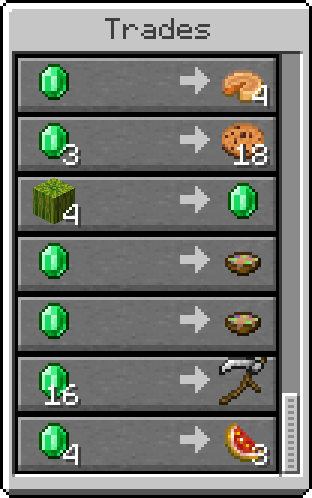
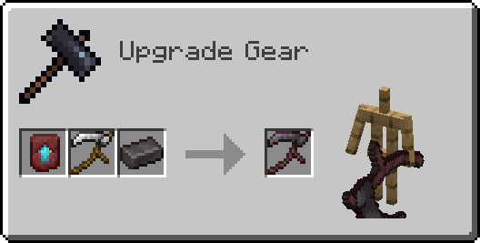

Credits:
@fluttercat555 (me!) - Programming, 16x art, designer.
@mimicnpaste - 32x textures.
Compatibility:
Reap is compatible with Combat Amenities!
Reap is also compatible with SOME mods that add custom crops, however using the scythe on any block tagged as "#minecraft:crops" with more or less than 6 growth stages will crash the game.
Download:
fabric 1.21.10- modrinth version on full release -

The Scythe:
Attacking reels in enemies instead of dealing knockback.

Advancements:


Obtaining a Scythe:
The scythe is obtainable from trading with a master level farmer villager.
Upgrading a Scythe:
The scythe can be upgraded to a netherite version via a smithing table.
The Hood:
The hood hides the player's nametag and position with player locator bar.